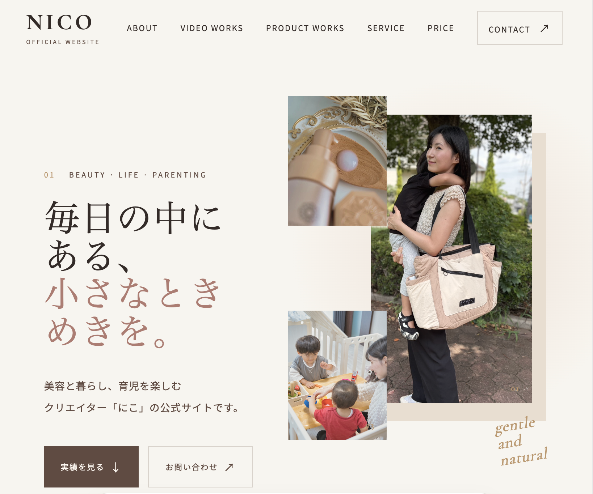

LP制作
商品・サービス紹介向けの1ページ
¥30,000〜
Webを、もっと自分らしく。
伝えたいことを丁寧に整理して、
見る人の記憶に残るWebサイトへ。
はじめまして、naoです。
理学療法士として約10年間、一人ひとりの悩みや目標に向き合い、相手の立場に立って考えることを大切にしてきました。
その経験を活かし、Web制作でもお客様の想いや事業の魅力を丁寧に汲み取り、見る人に伝わるホームページづくりを心がけています。
HTML・CSS・JavaScriptを使用したWebサイト制作に取り組み、クリエイターの公式サイト制作から公開・納品までを経験しました。
デザインの美しさだけでなく、見やすさ・使いやすさ・お問い合わせへのつながりを大切にしています。
小さなご相談にも誠実に向き合い、安心してお任せいただけるWeb制作者を目指しています。
ひとつひとつの目的に向き合い、
体験としてデザインしています。

CLIENT PROJECT / OFFICIAL WEBSITE
美容・暮らし・育児を中心に活動するクリエイターの公式サイト。プロフィールや制作実績、サービス内容を整理し、企業からの仕事依頼につながる導線を設計しました。
担当範囲：デザイン・コーディング・公開・運用
HTMLCSSJavaScript
FICTIONAL PROJECT / WEB SITE
パーソナルボクシングジムの架空Webサイト。力強さと清潔感を両立させ、体験予約までの流れをシンプルに設計。
HTMLCSSJavaScript※掲載作品はポートフォリオ用に制作した架空案件です。実在の店舗・サービスではありません。
目的とユーザーを見つめながら、
設計から実装まで丁寧に進めます。
構成設計 / UIデザイン / レスポンシブ
HTML / CSS / JavaScript
ヒアリング / 情報整理 / 改善提案
お客様の目的やご希望に合わせて、シンプルで伝わりやすいWebサイトを制作します。
商品・サービス紹介向けの1ページ
¥30,000〜
個人事業主・小規模店舗向け
¥50,000〜
対応可能な軽微な修正のみ
¥3,000〜
※料金は目安です。制作内容やページ数によりお見積もりします。ドメイン・サーバー等の費用は別途となる場合があります。
Let’s make something thoughtful.
ホームページを作りたいけれど、何から始めればいいかわからない。
そんな段階からでも大丈夫です。
Webサイト制作のご相談やお見積りなど、まずはお気軽にお問い合わせください。